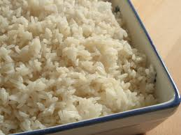

Arroz Branco

Description
The side dish for every Brazilian meal.
Ingredients
- Rice of choice, rinsed and dried
- Cloves of garlic, smashed
- Oil of choice, either canola or olive oil
Steps
- Define your quantities based on the number of people. The proportions are one measurement of rice for two measurements of water. Add garlic to taste (maybe two cloves per cup of rice)
- In a deep pan, add the oil and garlic and lightly fry the garlic
- Add the dry rice and fry it for 3 to 5 minutes (do not let it burn)
- Add hot water, lower the heat to very low and cover
- Never mix. Let the water dry completely. To check if the water has dried, open a little hole with a fork and quickly close it again it you still see water.
- Enjoy!